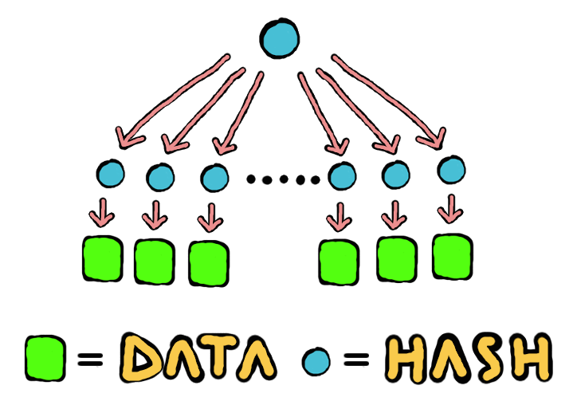
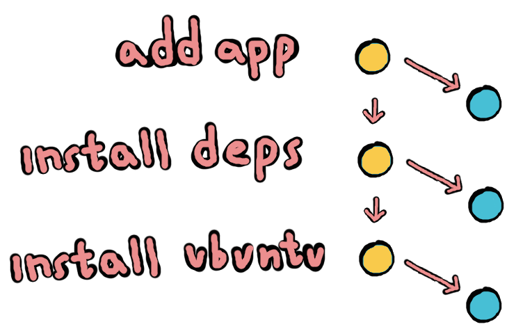

rethinking deployment
for the future \o/
@mafintosh
what is deployment?
copy an app from your machine to another machine and run it
the present
cd my-app
tar cz . | ssh remote.com 'tar xz'
ssh remote.com
npm install
npm start
if we change 1% we still resend 100%
:(
git add .
git push remote.com
ssh remote.com
npm install
npm start
git add .
git push remote.com
ssh remote.com
npm install
npm start
npm install can be nondeterministic
{
"name": "my-app",
"scripts": {
"install": "do-stuff-maybe"
}
}
npm install
git add .
git push remote.com
ssh remote.com
npm start
no modules with native bindings
:(
docker to the rescue
put the entire os into a container
cd my-app
docker build .
docker push
docker push hub.docker.io?!
machine-1 # docker build
machine-1 # docker push
machine-2 # docker build
machine-2 # docker push
everything is pushed twice
:(
the future
container snapshots
install ubuntu
snapshot
install dependencies
snapshot
add app
build app
snapshot
everysnap snapshot is a merkle tree of the changed files

every snapshot points to the previous snapshot

replicate by sharing the graph diff
:)
tak